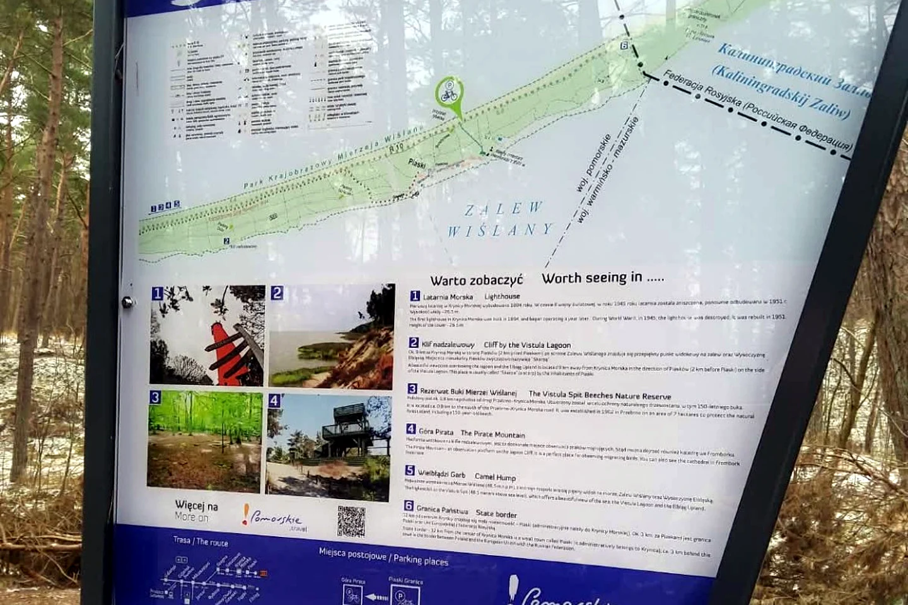

Piaski–Granica — am Ende der Straße vor Kaliningrad

Manche Reiseziele erkennt man an einem berühmten Bauwerk. Bei Piaski–Granica war es eine große Informationstafel mitten im Wald. Oben stand „Piaski–Granica“, daneben die R10. Auf der Karte führte die Linie weiter nach Osten — bis zur Staatsgrenze und zum russischen Gebiet Kaliningrad.
Ein schmaler Landstreifen zwischen zwei Wassern
Piaski liegt auf der polnischen Weichselnehrung. Auf der einen Seite ist die Ostsee, auf der anderen das Frische Haff. Die offizielle Tourismusseite der Woiwodschaft Pommern beschreibt den R10-Zubringer von Jantar über Krynica Morska bis zur Staatsgrenze bei Piaski. Von der Fähre in Mikoszewo bis zur Grenze sind es auf der dort beschriebenen Route knapp 60 Kilometer.
Ich war nicht dort, um eine Grenze zu überqueren. Mein Ziel war dieser besondere Punkt am Ende des zugänglichen Weges. Das Foto zeigt die Tafel, den Wald und etwas Schnee am Boden. Es wirkt ruhig — und gleichzeitig spürt man, dass hinter diesem Ort nicht einfach der nächste Badeort beginnt.
Warum mich dieser Platz beschäftigt hat
Eine Staatsgrenze ist auf einer Landkarte nur eine Linie. Vor Ort fühlt sie sich anders an. Die Straße endet, Schilder werden wichtiger, und die politische Wirklichkeit rückt plötzlich sehr nah an eine schöne Küstenlandschaft. Gerade dieser Gegensatz blieb mir im Kopf: Natur, Radroute und Urlaubsregion auf der einen Seite; streng bewachte Außengrenze auf der anderen.
Die R10 als ruhiger Weg dorthin
Die regionale Tourismusseite beschreibt den letzten Abschnitt hinter Krynica Morska als Waldstrecke mit Schotterbelag bis zur Grenze. Genau diese Umgebung sieht man auch auf meinem Foto. Wer mit dem Rad kommt, findet auf Pomorskie.Travel die offizielle Routenbeschreibung und GPX-Hinweise.
Piaski–Granica war für mich kein Ort für eine lange Sehenswürdigkeitenliste. Es war ein stiller, etwas unwirklicher Reisemoment. Ich stand vor einer Karte, sah die Linie nach Kaliningrad und wusste: Hier geht meine Route nicht weiter. Manchmal ist genau dieses Ende einer Straße das Bild, das von einer Reise bleibt.
Bis bald und immer gute Fahrt,
eure Tussy 💛